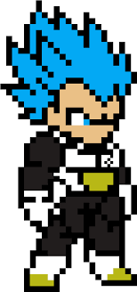

<!--Per aggiungere un'immagine nel proprio sito esiste la funzione  che contiene diversi keyword arguments.-->>

<!DOCTYPE html>
<html>
    <head>
        <title>website with an image</title>
    </head>
    <body>
        
        <a href="https://it.wikipedia.org/wiki/Vegeta"> <!--Un'immagine può fungere anche da cliccabile per un link senza problemi.-->
            
        </a>
    </body>
</html>

<!--Il keyword argument "src" prende la path dell'immagine.-->
<!--Il keyword argument "height", invece, prende numero, ossia il numero di pixel con cui verrà ridimensionata l'immagine. Qualora non venga inserito manualmente il keyword argument "width", quest'ultima viene ridimensionata proporzionatamente a quanti pixel sono stati associati a "height".-->
<!--Il keyword argument "alt" prende un testo ed è ciò che apparirà come sostituto dell'immagine qualora a quest'ultima dovessero esserci problemi-->
<!--Infine, il keyword argument "title" è un testo che apparirà quando si overa sopra l'immagine.-->